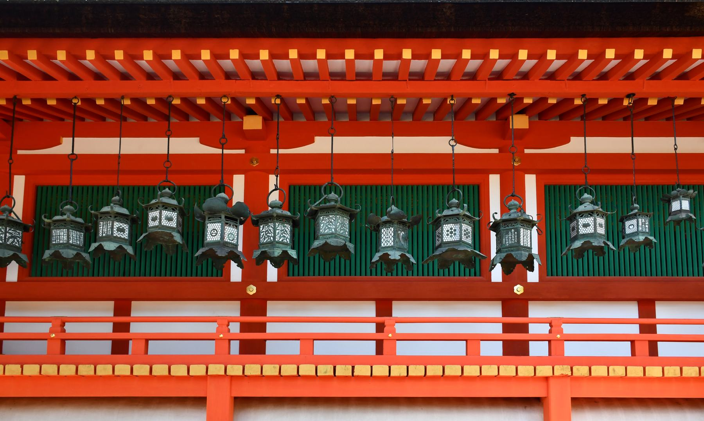

Multilingual support
We support the communication necessary for traveling to Japan and dealing with overseas guests in Japanese, Chinese, English, etc.
Welcome to Kansai
Airport Transfers / Private Tours / Corporate Transportation / VIP Transportation / Local Taxi / Used Car Sales
Multiple Kansai bases across Osaka, Kyoto, Sakai and Minato ・ An approximately 100-vehicle network
BUSINESS DOMAINS
Through chauffeur services, taxis and used car sales, Daitora Group supports airport transfers, private tours, corporate transportation, local mobility and practical vehicle use across Kansai.
Airport transfers, sightseeing charters, corporate/VIP transfers
We handle transfers from Kansai, Itami and Kobe airports, private tours in Kyoto, Nara and Kobe, corporate visits and VIP transportation. Vehicles such as the Alphard, Hiace and Mercedes-Benz S-Class are assigned with professional drivers according to passenger count, luggage and service requirements.
Local mobility ・ Daily travel ・ Sightseeing
Toramaru Taxi supports everyday travel to stations, hotels, airport areas, sightseeing destinations and business appointments across Osaka, Kyoto, Sakai, Minato and the wider Kansai region. Recognisable vehicles and consistent operating standards support both short local trips and sightseeing use.
Used vehicles ・ Business vehicles ・ Loan guidance
We support used vehicle purchases, business vehicles and loan consultations. Our first-hand operations experience helps us assess intended use, condition, maintenance and everyday practicality after vehicle handover.

TRAVEL INFORMATION
Japan Travel is a multilingual visitor information platform operated by Daitora Group, featuring destination guides, audio content and travel service access across Osaka, Kyoto and the wider Kansai region.
OUR STRENGTHS
Daitora Group's strength lies not only in its number of vehicles. With multilingual support, professional driver training, a well-maintained vehicle environment, and operation management at multiple locations, we support reliable transportation.
We support the communication necessary for traveling to Japan and dealing with overseas guests in Japanese, Chinese, English, etc.
Driver training covers not only driving skills, but also professional service, safety awareness and time management.
Pre-dispatch inspection, cabin cleaning and vehicle-condition checks help maintain a safe and comfortable environment.
We will utilize multiple locations in Kansai, including Osaka, Kyoto, Sakai, and Minato wards, and a network of approximately 100 vehicles.
DAITORA STANDARD
We value our company principles of Safety, Humility and Agility. Safety guides every decision, humility shapes how we serve each customer, and prompt, accurate action helps us respond beyond expectations. These principles are reflected in daily operations, professional service, vehicle management and on-site coordination.
Operation Strength
From reservation checks and dispatch planning to day-of operation and post-service reporting, repeated checks before and after each journey help us deliver dependable transportation.
Track Record
We have also handled projects that require time management, multiple vehicle operation, and on-site responsiveness, such as international conferences, company tours, brand events, and expo-related transportation.
We supported transportation for international conference stakeholders, gaining experience in schedule control, waiting-area verification and multi-vehicle coordination.
We coordinate multi-passenger and multi-vehicle assignments for corporate visits, training programmes and factory tours.
Provided VIP and stakeholder transportation primarily in Kyoto, with careful attention to vehicle presentation, chauffeur conduct and standby support.
We handle transportation for guests, related parties, and corporate organizations related to the Osaka/Kansai Expo. We support operation management during busy times and coordination of multiple vehicles.
News
| Date | Category | Article |
|---|---|---|
| Track Record | Provided Executive Transportation for Expo 2025 Osaka, KansaiCoordinated multi-vehicle transportation and on-site communication for a large-scale event. | |
| Track Record | Provided Transportation for a Major French Brand Event in JapanWe coordinated transportation for VIP guests and event personnel with close attention to chauffeur service and operational control. | |
| Notice | Kyoto office openedWe have expanded our system to accommodate chartered sightseeing tours to and from Kyoto, hotel transfers, and corporate use. | |
| Business Update | Strengthened Our Used Car Sales OperationsUtilizing our knowledge of vehicle management, we have strengthened our vehicle proposals and purchasing support that match the application. |
Contact